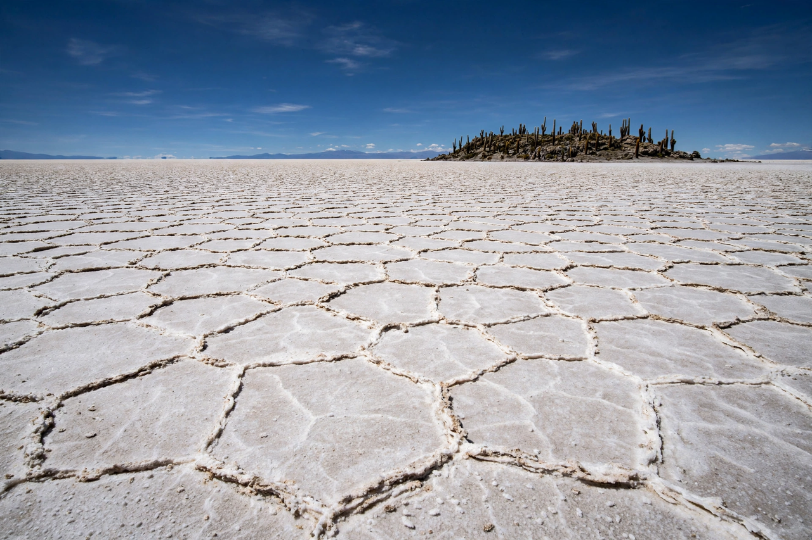

[Image placeholder: The Salar de Uyuni, a vast salt flat on the Bolivian Altiplano]The **Altiplano** ('high plain') is a vast intermontane plateau in west-central South America, the largest high plateau on Earth outside Tibet. At an average elevation of about 3,750 m, it stretches across southeastern Peru, Bolivia, northern Chile and northwestern Argentina between the western and eastern cordilleras of the Andes.
The Altiplano is the heartland of Andean civilisation: Lake Titicaca, the world's highest navigable lake, lies at its northern end, the Tiwanaku culture flourished on its shores, and Bolivia's seat of government La Paz and El Alto sit in and above a canyon at its edge. To the south lie great salt flats, including the Salar de Uyuni, the world's largest.
The plateau formed as the Andes rose, trapping sediment in an internal drainage basin. Its climate is cold and semi-arid, with intense sun, freezing nights and a summer rainy season; crops are dominated by potatoes, quinoa and camelid herding (llamas and alpacas). Under the southern salt flats lie some of the world's largest lithium reserves.
The Altiplano is home to Aymara and Quechua peoples; El Alto, above La Paz, is one of the world's highest major cities at about 4,150 m. High altitude shapes physiology, architecture and the famous difficulty visiting football teams face at La Paz's stadium.